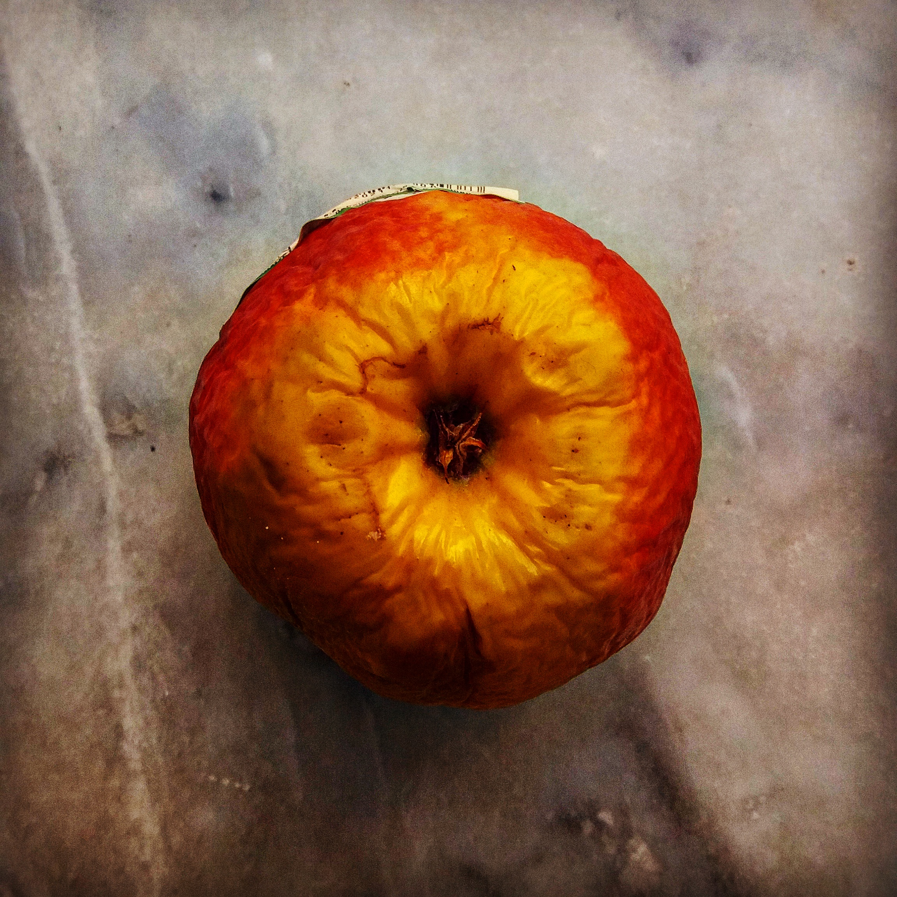

Speed is defined as the distance traveled divided by the time of travel.

Apple, Forbidden fruit, symbol of our sins. Generic term for foreign seeds and Freya's falcon skin.

The sun rises and the circadian rhythm returns to normal
As long ago as the late Iron Age, rising water levels led to the building of artificial mounds, terpen or wierden